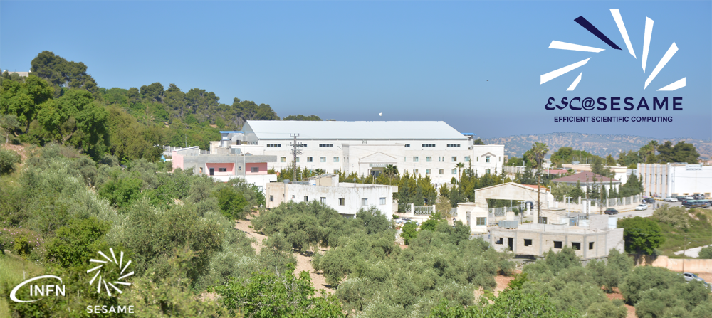

2025 Achievement
International School on Efficient Scientific Computing
Selected for the prestigious INFN–SESAME International School. This intensive program focuses on modern HPC architectures, parallel programming paradigms, and performance optimization for complex scientific workloads in an international research environment.
View Official Nomination (PDF)